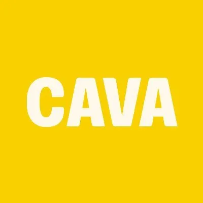
CAVAEstudo de benchmark internacional · 2026
As melhores redes
de comida saudável
do mundo
Um mapa das referências globais em wellness dining — quem são, como se estruturam e o que cada uma ensina à EAT+KITCHEN.
Por Thiago Zeni · Sócio investidor · conselheiro estratégico
15 redes · 14 países · ~90 fontes · jun 2026
Método
Como esta pesquisa foi feita
Escopo & método
01
4 frentes paralelas
Américas, Europa, Ásia/Oceania/Oriente Médio e um corte setorial de mercado — pesquisados simultaneamente.
02
~90 fontes citadas
Imprensa de negócios, relatórios de mercado, SEC filings, B-Lab, sites oficiais e reviews. Cada número tem origem.
03
Critério de inclusão
Apenas redes bem estruturadas e reconhecidas — escala real, modelo claro, sinais de marca. Restaurantes únicos ficaram de fora.
04
Honestidade de dados
Empresas privadas não divulgam receita; seguidores são aproximações. O que não foi confirmado aparece como n/d — nada inventado.
02 / 30Padrão Nielsen · Kantar · Ipsos
Síntese
Sumário executivo
Seis achados que atravessam o setor
1
Wellness + escala + margem coexistem — quando a tese de saúde é cientificamente ancorada (CAVA = mediterrânea; True Food = anti-inflamatória). Não é nicho de baixa margem.
2
Dois arquétipos vencedores — chef-led/company-owned premium vs. franquia capital-light de volume. Ambos funcionam, com disciplinas distintas.
3
Formato ou produto proprietário é um moat — mais forte que um "cardápio saudável" genérico (Fieldtray, poke, açaí puro).
4
Loyalty/app virou o motor de retenção — CAVA Rewards dirige ⅓ das vendas. Mas fricção mata o programa.
5
Diferenciação vem de autoridade real ou selo verificável — Dr. Weil + Oprah; B-Corp e carbon labels — não de claims genéricos.
6
O modelo de expansão é o destino — disciplina (Chopt) vs. franquia sem suporte (Freshii colapsou). Alerta macro: vendas mesmas-lojas esfriando em 2025.
03 / 30O essencial em uma tela
Mercado
Panorama de mercado
O tamanho da oportunidade
0 bi US$
Mercado global de fast casual (ordem de grandeza 2024–25; US$145–190 bi entre institutos).
0 bi US$
Subsegmento healthy / better-for-you (2025, MarketIntelo).
0 % a.a.
CAGR do segmento saudável (~7,8%) — acima da média do food service.
0 %
Participação da América do Norte na receita global do segmento.
Nota metodológica: as estimativas variam muito (US$92 bi a US$240 bi) porque cada instituto define "healthy" e "fast casual" de forma diferente. Tratar como ordens de grandeza. Fontes: Research and Markets, Strategic Market Research, Straits Research, MarketIntelo, FutureDataStats.
04 / 30Fast casual saudável · 2024–2034
Consumo
O que move o consumidor
Cinco vetores de demanda
0%
dos consumidores dos EUA colocam wellness como prioridade top/importante. McKinsey 2025
0%
dos americanos usavam GLP-1 (Ozempic/Wegovy) no fim de 2025 — reconfigura porção e foco em proteína. CNBC/eMarketer
0%
dos Millennials priorizam clean label (72% da Gen Z). 81% acham "necessário". Datassential
Proteína em 1º
Protein-forward (animal e vegetal) lidera as listas de tendências culinárias. National Restaurant Assoc. 2026
+0%
premium médio que o consumidor aceita pagar por comida mais saudável (meta-análise). Obesity Reviews
05 / 30Demanda estrutural, não modismo
Modelos
Dois caminhos para vencer
Os arquétipos vencedores
Arquétipo A
Chef-led · company-owned · premium
Controle total de operação e qualidade; cozinha real (não só montagem); ticket e margem mais altos; crescimento deliberado, comunidade a comunidade.
Quem: Honest Greens · Farmer J · Flower Child · True Food · Chopt
Quem: Honest Greens · Farmer J · Flower Child · True Food · Chopt
Arquétipo B
Franquia · capital-light · volume
Produto-herói simples e replicável; expansão rápida com pouco capital próprio; risco-chave = consistência entre lojas e suporte ao franqueado.
Quem: Pokawa · dean & david · Oakberry · SaladStop! · Kcal
Quem: Pokawa · dean & david · Oakberry · SaladStop! · Kcal
Leitura para a EAT
Não existe modelo "certo" — existe o modelo coerente com a ambição. A decisão de arquétipo precede a expansão para SP/SC/PR e determina o que medir: ticket e experiência (A) ou unidade replicável e suporte ao franqueado (B).
06 / 30A escolha que define a operação
Cobertura
As 15 redes do estudo
Um mapa de referências globais
Américas
EUA · 6 redes
- 🇺🇸CAVA439 lojas
- 🇺🇸Sweetgreen281
- 🇺🇸Just Salad~100
- 🇺🇸True Food Kitchen46
- 🇺🇸Flower Child44
- 🇺🇸Chopt~100
Europa
ES · FR · UK · DE · 5 redes
- 🇪🇸Honest Greens~30
- 🇫🇷Pokawa~130
- 🇬🇧Farmer J16
- 🇩🇪dean & david~130
- 🇫🇷Cojean~40
Ásia · Oceania · OM
BR→global · SG · AU · AE · 4 redes
- 🇧🇷Oakberry~700
- 🇸🇬SaladStop!80+
- 🇦🇺Fishbowl46
- 🇦🇪KcalEAU/KSA
- 🇧🇷Liv UpD2C
07 / 3015 redes + 1 case foodtech + 2 alertas
Marcas
As 15 referências
O rosto das redes
🇺🇸 EUA
sweetgreen
🇺🇸 EUA
Just Salad
🇺🇸 EUA
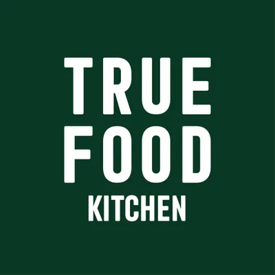
True Food🇺🇸 EUA
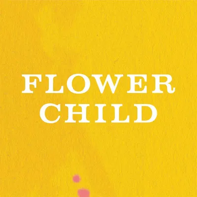
Flower Child🇺🇸 EUA
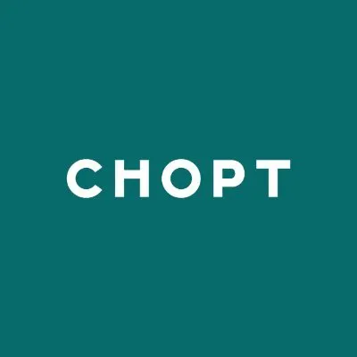
Chopt🇺🇸 EUA
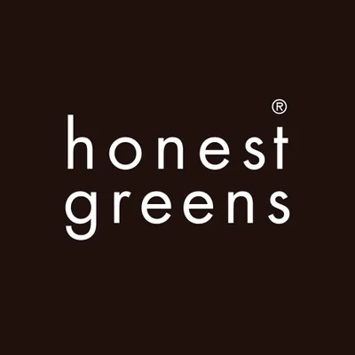
Honest Greens🇪🇸 ESP
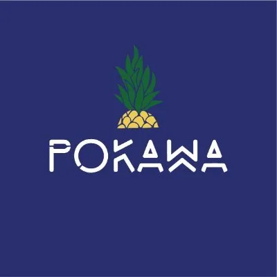
POKAWA🇫🇷 FRA
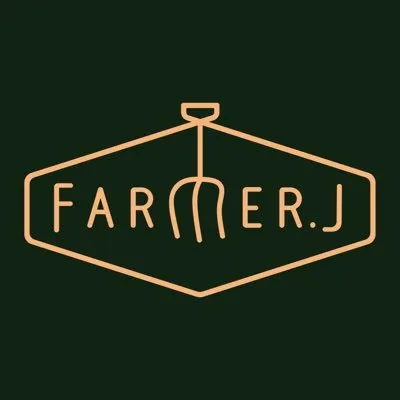
Farmer J🇬🇧 UK
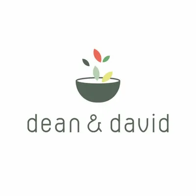
dean & david🇩🇪 ALE
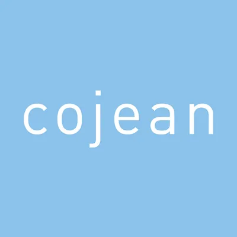
cojean🇫🇷 FRA
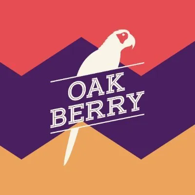
OAKBERRY🇧🇷 BRA
SaladStop!
🇸🇬 SGP
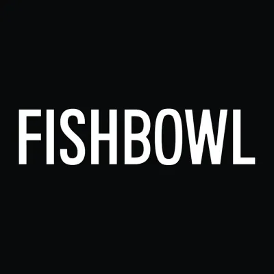
Fishbowl🇦🇺 AUS
Kcal
🇦🇪 EAU
Logos oficiais das marcas · uso de referência para benchmark interno.
07 / 3015 marcas · 14 países
Posicionamento
Matriz de posicionamento
Modelo × escala
Premium / company-owned
Volume / franquia
Escala menor
Escala global
Farmer J
Honest Greens
True Food
Flower Child
Chopt
CAVA
Sweetgreen
Just Salad
Cojean
Fishbowl
Kcal
SaladStop!
dean & david
Pokawa
Oakberry
● branco = company-owned premium · ● lime = franquia/volume. Posição aproximada para leitura estratégica.
08 / 30Onde cada rede joga
Operação
Como essas redes funcionam
Cinco formatos de serviço
🥗
Balcão / linha de montagem
Cliente faz fila e monta o bowl na frente do atendente (assembly line), paga no fim, senta ou leva. O modelo dominante do fast-casual saudável.
CAVA · Sweetgreen · Chopt · Honest Greens · Pokawa · SaladStop!
🍽️
Salão com atendimento
Cliente senta e é servido (full-service com garçom, ou runner que leva o prato à mesa). Cozinha de verdade; ticket e permanência maiores.
True Food Kitchen (garçom) · Flower Child (runner)
🛍️
Grab-and-go / quiosque
Formato pequeno, alto giro, pouco ou nenhum assento; foco em takeaway e pontos de fluxo (mall, aeroporto, estação).
Oakberry · Cojean · Kcal
🚗
Drive-thru / pickup
Retirada rápida sem descer do carro ou balcão de pickup dedicado para pedidos via app. Camada de conveniência sobre o counter-service.
CAVA (pickup lanes) · Sweetgreen "Sweetlane"
📦
D2C / delivery-first
Sem loja física: pedido por app, entrega de refeições (frescas, congeladas ou meal plan). Escala geografia sem CAPEX de unidade.
Liv Up · Kcal (meal plans)
Camada de tecnologia (ortogonal ao formato)
Totens de autoatendimento (Pokawa; Chopt = 30–40% da receita, +5–10% no ticket) · app de pedido antecipado e loyalty (CAVA 36% digital · Sweetgreen 62%) · QR code na mesa · automação de cozinha (Sweetgreen Infinite Kitchen, ~500 bowls/h, margem 30%+) · self-checkout. A tecnologia reduz fricção e protege margem — independente do formato de salão.
00 / 00Balcão · salão · quiosque · drive-thru · D2C
Américas · 01/06
RANK 01 · LÍDER GLOBAL
🇺🇸 Mediterrâneo plant-forward
CAVA
Bowls e pitas mediterrâneos customizáveis. Ancorou wellness numa dieta cientificamente validada e virou a rede saudável mais reconhecida dos EUA — capital aberto na NYSE.
2006
Fundação · Maryland
439 lojas
EUA · 100% próprias
US$1,1 bi
Receita FY25 · +22% · margem 25%
8 mi
Membros loyalty · ⅓ das vendas
"Best Healthy Chain 2025" · DatassentialNYSE: CAVAIG ~321 milTier secreto "Oasis"
Margem de loja quase no nível do Chipotle — provando que saúde, escala e lucro cabem na mesma marca.FY2025 · Fortune / SEC
Benchmark
Tese de saúde nomeável (mediterrânea) + loyalty premium gamificado que dirige um terço das vendas = o motor de retenção mais sofisticado do setor.
09 / 30Escala + margem + wellness
Américas · 02/06
RANK 02 · PIONEIRA · TECH
🇺🇸 Saladas & warm bowls sazonais
Sweetgreen
A pioneira do segmento e o "Starbucks da salada". Lidera em tecnologia — a cozinha robótica Infinite Kitchen — mas o FY25 acendeu um alerta de demanda.
2007
Fundação · Washington D.C.
281 lojas
EUA · capital aberto (SG)
US$680 mi
Receita FY25 · prejuízo US$134 mi
−7,9%
Vendas mesmas-lojas (alerta)
Infinite Kitchen · ~500 bowls/hDrive-thru "Sweetlane"IG ~462 mil
Automação protege a margem — mas não cria demanda. Marca forte e tech não bastaram para segurar o tráfego.Leitura do FY2025
Benchmark
Eficiência operacional é necessária, não suficiente. Conceito 100% próprio (sem franquia) obriga a defender tráfego ativamente, não só cortar custo.
10 / 30O limite da eficiência
Américas · 03/06
RANK 03 · SUSTENTABILIDADE
🇺🇸 "Eat With Purpose"
Just Salad
Saúde acessível + sustentabilidade certificada por terceiros. Primeira rede dos EUA a estampar pegada de carbono no cardápio — e isso ajudou a sustentar um valuation de US$1 bi.
2006
Fundação · Manhattan
~100 lojas
EUA + 3 Dubai
US$1 bi
Valuation · US$200 mi (2025)
B-Corp
Score 80,4 · carbon labels
1ª com carbon labels nos EUAReusable Bowl desde 2006IG ~70 mil
O novo programa de pontos "parece desenhado para criar fricção — as recompensas são esquecidas, não resgatadas".Crítica de cliente · Restaurant Dive
Benchmark
Sustentabilidade verificável vira ativo de valuation. Contraponto: mecânica de fidelidade deve reduzir atrito (resgate em 24h gerou backlash).
11 / 30Selo verificável como moat
Américas · 04/06
RANK 04 · AUTORIDADE MÉDICA
🇺🇸 Premium · anti-inflamatório
True Food Kitchen
Cardápio inteiro construído sobre a pirâmide anti-inflamatória do Dr. Andrew Weil. Saúde não é claim de marketing — é a espinha dorsal do menu. Oprah é investidora.
2008
Fundação · Phoenix
46 rest.
18 estados · premium
US$100 mi+
Captados (2022) · Oprah equity
0 óleo de semente
100% seed-oil-free (2024)
Colab viral com SZA · "SZA CZA Salad"Dr. Weil + Sam FoxIG ~247 mil
Ingredientes orgânicos, anti-inflamatórios, sem óleos de semente — eu me senti bem depois de comer.Review de cliente · Yelp
Benchmark
Credibilidade vem de autoridade fundadora real (um médico com framework próprio). Capital de missão + gestos culturais virais de baixo custo geram mídia espontânea.
12 / 30A saúde É o produto
Américas · 05/06
RANK 05 · UNIT ECONOMICS
🇺🇸 "Healthy Food for a Happy World"
Flower Child
Vegetable-forward inclusivo (vegano, vegetariano, GF, paleo). Prova que health-positioning não é nicho de baixa margem — é o ativo de melhor performance do portfólio da Cheesecake Factory.
2014
Fundação · Phoenix (Sam Fox)
44 lojas
15 estados · grupo CAKE
US$4,6 mi
AUV por loja · o maior do estudo
19,5%
Margem de loja · SSS +4%
AUV ~US$4,6 miFull-kitchen, não montagemIG ~161 mil
Atenção impecável ao detalhe — serviço excepcionalmente rápido mesmo no pico do almoço.Review de cliente · Yelp
Benchmark
Qualidade de cozinha real + inclusividade dietética, em vez de competir por preço, entrega o melhor AUV do setor saudável.
13 / 30Saudável também é premium
Américas · 06/06
RANK 06 · EXPANSÃO DISCIPLINADA
🇺🇸 Saladas autorais picadas na hora
Chopt
Saladas criativas picadas na faca mezzaluna. Cresceu de ~32 para ~100 lojas mantendo controle total da operação — o oposto exato do erro de franquia da Freshii.
2001
Fundação · Union Square NYC
~100 lojas
12 mercados · company-owned
3 tiers
Chopt Rewards · app via Toast
~32→100
Crescimento controlado (2015→25)
Parceria fitness · Cody Rigsby (Peloton)Sourcing regenerativoIG ~129 mil
Faz uma ótima salada — à altura do Sweetgreen na minha opinião, e com preços melhores.Review de cliente · Trustpilot
Benchmark
Company-owned disciplinado garante consistência de qualidade na escala. App + loyalty tiered + influencer fitness reposicionam "salada" como lifestyle, sem perder preço.
14 / 30Controle como vantagem
Europa · 01/05
EUROPA · CHEF-LED
🇪🇸 "Eat Real." · plant-forward
Honest Greens
Comida de verdade chef-driven, scratch-made, raiz mediterrânea. Atraiu capital de Ron Shaich (fundador da Panera) — selo de consistência operacional antes do blitz geográfico.
2017
Fundação · Barcelona
~30 lojas
ES · PT · FR · UK
Act III
Investimento de Ron Shaich (2025)
~345 mil
Instagram · forte no digital
Capital do fundador da PaneraApp "Speed Lane"Loyalty "Honest People"
A comida é deliciosa, agrada o consumidor focado em saúde e é profundamente conectada às comunidades.Ron Shaich · Act III Holdings
Benchmark
Comer saudável tratado como experiência sensorial chef-led, não compromisso. Expansão comunidade a comunidade — consistência antes de velocidade.
15 / 30Cozinha de chef em escala
Europa · 02/05
EUROPA · FRANQUIA CAPITAL-LIGHT
🇫🇷 Poke bowls "fast good"
Pokawa
De <€20 mil iniciais a ~130 lojas em ~8 anos. Um produto-herói customizável (poke) escalado por franquia leve — com a consistência operacional como risco central.
2017
Fundação · Paris
~130 lojas
FR + BE/LU/CH/Marrocos
€100 mi
Faturamento de marca (2024)
74%
Lojas franqueadas (88 de 119 FR)
"Révélation de la Franchise 2022"Pokaw'App + kiosksIG ~185 mil
Um restaurante agradável, a escolha é variada — mas a porção e a qualidade variam entre lojas.Síntese de reviews · Google 4,4★
Benchmark
Produto-herói customizável escala rápido com pouco capital. A tensão clássica: franquear uma promessa "fresco, feito na hora, saudável" exige governança de consistência.
16 / 30Velocidade via franquia
Europa · 03/05
EUROPA · FORMATO PROPRIETÁRIO
🇬🇧 Farm-to-fork · "proper food, fast"
Farmer J
Transformou o almoço saudável num ritual de marca: The Fieldtray, uma bandeja particionada registrada. Foco cirúrgico em escritórios da City de Londres — e agora NYC.
2016
1ª loja · City of London
16 lojas
Londres + 1ª em NYC (2026)
£17,5 mi
Captados (out/2025 · Beringea)
+55%
Vendas 2024 · EBITDA dobrou
The Fieldtray™ · formato ownávelGreat Taste AwardIG ~65 mil
Não consigo comprar uma casa, então por que não me presentear com brócolis ao gergelim?Trabalhador da City · City AM
Benchmark
Diferenciar pela experiência de comer, não só pelos ingredientes. Formato proprietário + densidade geográfica = unit economics que financiam expansão.
17 / 30Um ritual de marca ownável
Europa · 04/05
EUROPA · FRANQUIA DISCIPLINADA
🇩🇪 "we care, you eat"
dean & david
A maior rede saudável estruturada da região DACH. Escalou a 100+ lojas por franquia financiada com o próprio caixa — disciplina no lugar de blitz-scaling com VC.
2007
Fundação · Munique
~130 lojas
DE/AT/CH/LU + Qatar
Caixa
Crescimento autofinanciado
Superfood
Sub-marca de sucos prensados
Franquia financiada por fluxo de caixaApp + Rewards "collect greens"IG ~42 mil
Disciplina sobre velocidade: 100+ unidades sem perseguir capital de risco.Leitura do modelo · Crunchbase/Pitchbook
Benchmark
Franquia autofinanciada cresce sólido. A sub-marca de sucos/superfood mostra como monetizar o halo de wellness para além do cardápio principal.
18 / 30Escalar sem queimar caixa
Europa · 05/05
EUROPA · CERTIFICAÇÃO COMO MOAT
🇫🇷 "Feel-good food" · desde 2001
Cojean
Pioneira "anti-fast-food" criada por um ex-diretor de R&D do McDonald's França. Primeira fast-food do país certificada B-Corp — sustentabilidade convertida em identidade defensável.
2001
Fundação · Paris
~40 lojas
Paris · expansão em estações
90,2
B-Corp score (2019)
~40%
Cardápio vegetariano
1ª fast-food B-Corp da FrançaTravel-retail (estações)IG ~45 mil
Citada pela revista TIME como pioneira "anti-fast-food".TIME · bcorporation.net
Benchmark
Certificação B-Corp como moat de posicionamento + expansão por hubs de transporte (não high-street) — um modelo replicável para grab-and-go saudável.
19 / 30O selo como identidade
Global · 01/04
GLOBAL · MONOPRODUTO BRASILEIRO 🇧🇷
🇧🇷 Açaí puro "clean"
Oakberry
A marca brasileira que virou referência global. Transformou o açaí num superfood de conveniência e chegou a ~700 lojas em 40+ países — com aporte do BTG Pactual.
2016
Fundação · São Paulo
~700 lojas
40+ países · franquia
US$67 mi
Série C (2024 · BTG Pactual)
US$200 mi
Receita ~2024 · ~1.400 funcs.
Brasileira global · 40+ paísesSupply chain na AmazôniaApp MY OAK · IG ~223 mil
Um único item "saudável-icônico" bem executado viaja melhor que um cardápio amplo.Leitura do modelo · QSR Magazine
Benchmark
Monoproduto + supply chain verticalizada + franquia small-format = escala global rápida. O case brasileiro mais relevante para a ambição da EAT.
20 / 30O case brasileiro global
Global · 02/04
GLOBAL · HOLDING MULTIMARCA
🇸🇬 "Eat Wide Awake"
SaladStop!
A maior rede saudável da Ásia, organizada como holding multimarca. Sustentabilidade no núcleo do produto: B-Corp e a primeira loja Net-Zero de food service do Sudeste Asiático.
2009
Fundação · Singapura
80+ lojas
8 mercados asiáticos
88%
Cardápio plant-based
B-Corp
+ 1ª loja Net-Zero do SEA
Holding: SaladStop!, Heybo, FreshKitchen…Loyalty premia sustentabilidadeEast Ventures
Loja Net-Zero, carbono rastreado, fidelidade atrelada a impacto — sustentabilidade como produto, não greenwashing.Tatler Asia · SaladStop Group
Benchmark
Sustentabilidade como eixo de produto e marca. Modelo de holding multimarca cobre faixas de preço/ocasião distintas com operação compartilhada.
21 / 30Multimarca + impacto real
Global · 03/04
GLOBAL · OPERATIONAL-FIRST
🇦🇺 "Change fast food, change the culture"
Fishbowl
Poke e saladas de inspiração asiática made-to-order. Cresceu de 1 a 46 lojas com padronização via stack de tecnologia único — case oficial de scaling operacional.
2016
Fundação · Bondi, Sydney
46 lojas
Austrália + NY (THISBOWL)
A$22,5 mi
Receita estimada
1→46
Escala via stack tech único
Case oficial de scaling (Square)Parceiro F&B do Australian OpenIG ~42 mil
A tecnologia de operação — POS e app únicos — é o que destrava a escala, não só o marketing.Leitura do modelo · Square case study
Benchmark
Crescimento operational-first: padronização tecnológica permite replicar a operação com consistência. A loja é um produto de software bem montado.
22 / 30Tech de operação destrava escala
Global · 04/04
GLOBAL · ECOSSISTEMA WELLNESS
🇦🇪 Healthy fast food · paleo
Kcal
Pioneira do "healthy fast food" no Oriente Médio. Vai além da loja: assinatura de meal plan + wearable conectado (Kcal FIT) criam um ecossistema de wellness "always-on".
2010
Fundação · Dubai
EAU·KSA·KW
3 mercados · franquia regional
Kcal FIT
1º meal plan com fitness tracker
300 mil+
Clientes · cozinhas ISO 22000
Loja + meal plan + wearableAlinhada à Saudi Vision 2030IG ~47 mil
Loja + assinatura + wearable prende o cliente ao plano de refeições/fitness, não a uma visita avulsa.Leitura do modelo · kcallife.com
Benchmark
Ecossistema "always-on" aumenta o lifetime value. Ancorar a narrativa em política pública de saúde (Vision 2030) abre portas institucionais.
23 / 30Wellness como assinatura
Case foodtech 🇧🇷
CASE ESPECIAL · SAUDÁVEL SEM LOJA
🇧🇷 Foodtech D2C · refeições prontas
Liv Up
O contraponto à loja física: refeições saudáveis congeladas, sem conservantes, entregues direto ao consumidor por app em 80+ cidades. Atingiu breakeven e abriu o canal B2B.
2016
Fundação · São Paulo
80+ cidades
Sem lojas · D2C/app
R$250 mi
Faturamento projetado 2025
Breakeven
Atingido em 2024
R$180 mi captadosB2B "Generosa" (2024)Case Google for Startups
Saudável não precisa de loja: app + logística de congelados escala geografia sem CAPEX de unidades.Exame · InfoMoney
Por que importa para a EAT
Mostra um canal alternativo (D2C + B2B corporativo) que pode complementar a operação de salão — fronteira do wellness food é unit economics + canal, não só varejo de rua.
24 / 30A fronteira sem CAPEX de loja
Comparativo
Quadro-resumo
As 15 redes, lado a lado
| Rede | País | Início | Lojas | Modelo | Diferencial-chave |
|---|---|---|---|---|---|
| CAVA | 🇺🇸 EUA | 2006 | 439 | Próprio · aberto | Mediterrâneo + loyalty de 8 mi |
| Sweetgreen | 🇺🇸 EUA | 2007 | 281 | Próprio · aberto | Automação (Infinite Kitchen) |
| Just Salad | 🇺🇸 EUA | 2006 | ~100 | Próprio · US$1 bi | B-Corp + carbon labels |
| True Food Kitchen | 🇺🇸 EUA | 2008 | 46 | Próprio · premium | Autoridade médica (Dr. Weil) |
| Flower Child | 🇺🇸 EUA | 2014 | 44 | Grupo CAKE | AUV ~US$4,6 mi (o maior) |
| Chopt | 🇺🇸 EUA | 2001 | ~100 | Próprio | Expansão disciplinada |
| Honest Greens | 🇪🇸 ESP | 2017 | ~30 | Próprio · chef-led | Capital de Ron Shaich (Panera) |
| Pokawa | 🇫🇷 FRA | 2017 | ~130 | Franquia 74% | Poke capital-light |
| Farmer J | 🇬🇧 UK | 2016 | 16 | Próprio | Fieldtray™ (formato ownável) |
| dean & david | 🇩🇪 ALE | 2007 | ~130 | Franquia · caixa | Autofinanciada (líder DACH) |
| Cojean | 🇫🇷 FRA | 2001 | ~40 | Próprio | B-Corp 90,2 + travel-retail |
| Oakberry | 🇧🇷 BRA | 2016 | ~700 | Franquia global | Monoproduto açaí · 40+ países |
| SaladStop! | 🇸🇬 SGP | 2009 | 80+ | Holding multimarca | B-Corp + loja Net-Zero |
| Fishbowl | 🇦🇺 AUS | 2016 | 46 | Próprio | Operational-first (tech) |
| Kcal | 🇦🇪 EAU | 2010 | multi | Franquia + assinatura | Loja + meal plan + wearable |
25 / 30+ Liv Up (D2C) e 2 casos-alerta
Operação
Comparativo operacional
Como cada rede opera
| Rede | Serviço | Loja | Assentos | Equipe | Ticket / AUV | Tecnologia |
|---|
Footprint convertido para m². "n/d" = não divulgado em fonte aberta (empresas privadas ou dados atrás de paywall Technomic). Ticket médio absoluto e funcionários/loja quase nunca são públicos no setor — só indicadores relativos (ex.: kiosk +5–10% no ticket).
00 / 00Modelo · footprint · assentos · volume · tech
Operação
Tamanho real das unidades
Footprint à escala
Área proporcional ao tamanho real de loja (m²). O mesmo conceito "saudável" vai do quiosque de 46 m² ao salão de 650 m² com garçom — 14× de diferença.
Oakberry~46 m²
quiosque · 0 lug.
quiosque · 0 lug.
SaladStop!~60 m²
kiosk/small
kiosk/small
Pokawa70–100 m²
takeaway
takeaway
Just Salad84–186 m²
takeaway
takeaway
Chopt158–186 m²
~40 lug.
~40 lug.
CAVA186–279 m²
35–55 lug.
35–55 lug.
Flower Child325–372 m²
~140 lug.
~140 lug.
True Food465–650 m²
60–200 lug. · garçom
60–200 lug. · garçom
Footprint médio do range divulgado por cada rede; área desenhada em proporção real ao m². Counter-service compacto (esquerda) = menor CAPEX e break-even mais rápido; salão grande (direita) = AUV e permanência maiores.
00 / 00Do quiosque ao salão · escala real
Síntese
Margem · fricção · valor
O que torna o modelo vencedor
01 · Margem
Onde está o lucro
CAVA 24–26% de margem de loja (counter mediterrâneo) é a régua. Lojas com automação (Sweetgreen IK) chegam a 30%+ no 1º ano. Flower Child tem o AUV recorde (US$4,6M) com salão premium. Counter compacto (~190 m²) = menor CAPEX e break-even mais rápido.
02 · Fricção
Onde ela some
App de pedido antecipado tira a fila (CAVA 36% · Sweetgreen 62% digital). Totens (Chopt: 30–40% da receita, +5–10% no ticket) reduzem erro e fazem upsell. Automação (~500 bowls/h) absorve o pico. Drive-thru/pickup eleva o AUV em 10–15% (CAVA).
03 · Valor percebido
Por que paga mais
Cozinha de verdade e frescor (chef-led, full-kitchen). Autoridade (Dr. Weil) e selos (B-Corp, carbon labels). Ritual/formato ownável (Fieldtray, açaí puro). O consumidor aceita pagar ~30% de premium por comida mais saudável.
O denominador do vencedor
Footprint eficiente (counter ~190 m² de baixo CAPEX ou salão premium de AUV alto) + camada digital/loyalty que reduz fricção e eleva o ticket + tese de valor defensável. A automação ajuda a margem, mas não cria demanda — a lição Sweetgreen (vendeu a tecnologia em 2025 e a margem da rede caiu a 14,5–15%).
00 / 00Eficiência × fricção × valor
Marca
Presença digital
Quem domina o Instagram
Sweetgreen 🇺🇸~462 mil
Honest Greens 🇪🇸~345 mil
CAVA 🇺🇸~321 mil
True Food 🇺🇸~247 mil
Oakberry 🇧🇷~223 mil
Pokawa 🇫🇷~185 mil
Flower Child 🇺🇸~161 mil
Chopt 🇺🇸~129 mil
Contexto EAT
Referência: @eatkitchengram tem +99 mil seguidores — já na faixa de redes globais, encostando no Chopt (~129 mil) e acima de Just Salad (~70 mil) e Farmer J (~65 mil), com muito menos lojas. O ativo digital da EAT é desproporcionalmente forte; o desafio é convertê-lo em loyalty e canal próprio, como faz a CAVA (⅓ das vendas via app).
Seguidores aproximados (jun/2026); plataformas bloqueiam leitura exata. CAVA mede força no CRM/loyalty, não só no follower count.
26 / 30O follower não é o KPI final
Social
Instagram · a voz de cada marca
Como cada marca fala
463K
@sweetgreen
touching grass and serving greens
407 ❤ · último post
346K
@honestgreens
Chef-driven honest kitchen · BCN · MAD · VAL
1.021 ❤ · último post
322K
@cava
warning: tzatziki is NOT sunscreen ⚠️
497 ❤ · último post
247K
@livetruefood
Crafted to Crave. Founded by @drweil 🥬
223K
@oakberry
Existe açaí e existe OAKBERRY · #RespectTheOAK
338 ❤ · último post
186K
@pokawaworld
From Hawaï ✨ 130 shops
1.889 ❤ · último post
161K
@eatflowerchild
Healthy Food for a Happy World 🌻
129K
@choptsalad
Reimagining salads one bowl at a time.
58 ❤ · último post
70K
@justsalad
we also have wraps 💅✨
65K
@farmerjfood
Home of the Fieldtray · LDN + NYC
344 ❤ · último post
47K
@kcal.life
#1 UAE's Best Meal Plan · #tastelife
119 ❤ · último post
45K
@cojeanrestaurants
Feel-good food · veggie, vegan & dog friendly
42K
@dean_and_david
Keep it light this summer!
42K
@fishbowl_fuel
Coconut Chicken // Five Spice Beef
96 ❤ · último post
7,7K*
@saladstopsg
Empowering you to create healthier habits
*conta por país
Bios e métricas reais coletadas no Instagram (jun 2026). ❤ = curtidas no post mais recente. SaladStop! opera contas por país (@saladstopsg sede · @saladstopid ~80K).
00 / 0015 marcas · a voz em uma frase
Social
Board de comunicação · Instagram
Como cada marca comunica
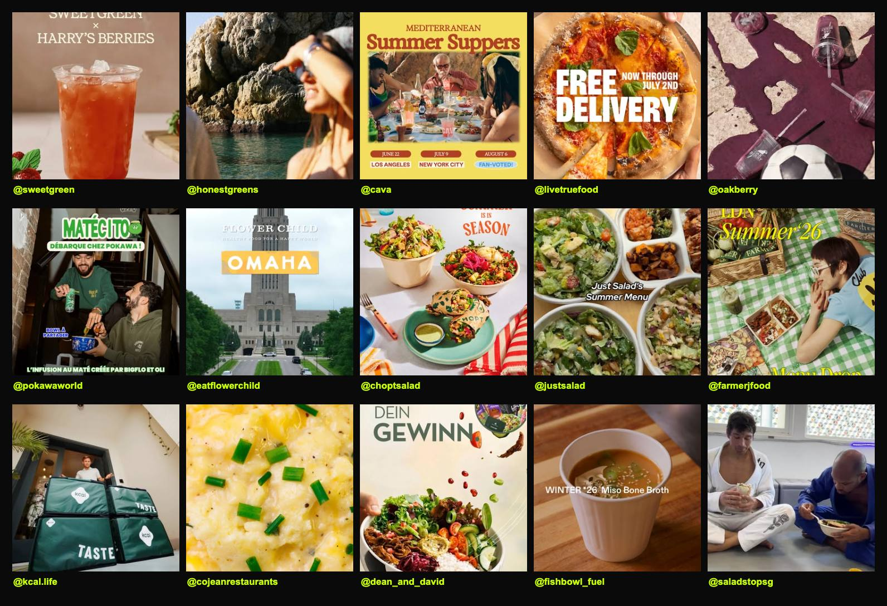
Posts mais recentes, coletados ao vivo no Instagram (jun 2026) · 15 marcas · cada célula é um post real.
00 / 00O feed real de cada rede
Social
Voz do cliente · Instagram
Comentários reais nos posts
★★★★★
So excited!! 😍 — Let's all vote for Greece!
CAVA · Instagram · campanha de eventos
★★★★★
Gimme 14 of them — @musingsofk on a day like today?? SOLD
Fishbowl · Instagram · lançamento de menu
★★★★★
You are simply the best. ❤️
Kcal · Instagram · novos meal plans
★★★★★
Que ganas de probar la nueva carta de verano ✨
Honest Greens · Instagram · menu de verão (ES)
★☆☆☆☆
Such a hateful company 🤮
Sweetgreen · Instagram · backlash recorrente
★★☆☆☆
Que ridículo! Tanta coisa para trabalhar o marketing…
Oakberry · Instagram · crítica a campanha
Leitura
O tom social é mais emocional e imediato que os reviews — entusiasmo puro nos lançamentos. Mas marcas grandes colhem entusiasmo E backlash público (Sweetgreen, Oakberry): a gestão de comunidade é parte do ativo de marca, não acessório.
00 / 00Engajamento real, com o lado bom e o ruim
Voz do cliente
Recortes reais · Tripadvisor
O que os clientes dizem
★★★★★
The food quality is fantastic. Great service too.
CAVA · Tripadvisor · NYC
★★★★★
Management refunded the entire purchase. This is the way business should be done.
Flower Child · recuperação de serviço · Scottsdale
★★★★☆
Good salads at fair prices by NY standards. Portions are quite large.
Sweetgreen · Tripadvisor · NoMad
★★☆☆☆
Portions are getting smaller — at least 1/3 less today. This is not good value.
Farmer J · Tripadvisor · Londres
★☆☆☆☆
Mistakes in our order, black avocado… a first and last experience!
Pokawa · Tripadvisor · Paris
★★☆☆☆
We choose standing at the counter… tables extremely uncomfortable. Not to repeat.
Honest Greens · Tripadvisor · Madri
Depoimentos verbatim reais, com URL de origem (Tripadvisor, nota por unidade). Mix proposital de elogio e crítica — a crítica é o sinal mais útil.
00 / 0012 de 13 redes com depoimento rastreável
Voz do cliente
O padrão por trás dos reviews
Valor · fricção · preço
Valor percebido
"Saudável E gostoso"
Três palavras dominam os elogios: fresh · delicious · healthy. O gancho é o combo saudável + saboroso (Sweetgreen, Kcal, Flower Child, True Food). Customização (montar o bowl) e velocidade reforçam o valor.
Fricção
Sempre operacional
As queixas quase nunca são do conceito, e sim da execução: inconsistência no pico (ruptura de estoque, erro de montagem, qualidade que varia por unidade), fila/espera maior que a prometida e app rígido (Sweetgreen).
Percepção de preço
Porção > preço absoluto
A tensão é porção × preço, não o preço em si. O cliente paga o "saudável premium", mas pune porção encolhendo ("1/3 a menos", "uma colherada de cada"). Porção generosa transforma o mesmo preço em "great value".
Leitura para a EAT+KITCHEN
A fraqueza dos líderes é operacional, não conceitual — consistência, fila e porção honesta. É exatamente onde uma rede menor e bem gerida pode ganhar percepção de valor: porção generosa + execução consistente + a promessa "comida de verdade" cumprida em toda visita.
00 / 00Onde os líderes deixam brecha
Alertas
O que evitar
Dois colapsos que ensinam
🇨🇦 Freshii · franquia sem suporte
Crescimento de unidades ≠ valor
Pico de 220 lojas em 20 países (2016), abrindo ~3,5/semana. Sem suporte ao franqueado, colapsou: EUA 170 → <30 lojas, ação <US$1, vendida por ~⅓ do valor de IPO (2023). O caso "Percy" (caixas terceirizados a US$3,75/h) feriu a reputação.
Lição: economia do franqueado e suporte operacional são pré-condição — sem isso, escala vira passivo.
Lição: economia do franqueado e suporte operacional são pré-condição — sem isso, escala vira passivo.
🇬🇧 Leon · diluição de marca
Integridade é o ativo central
Pioneira "naturally fast food" (2004). Passou dos fundadores → EG Group (£100 mi) → Asda, diluiu o posicionamento de saúde para perseguir margem, perdeu dinheiro todo ano desde 2016 e entrou em administração (~20 fechamentos, fim 2025). O cofundador recomprou por ~£30–50 mi para restaurar a promessa.
Lição: credibilidade de saúde é o ativo — diluí-la erode confiança e economia juntas.
Lição: credibilidade de saúde é o ativo — diluí-la erode confiança e economia juntas.
Para a EAT
Ao expandir (SP/SC/PR) e eventualmente franquear: blindar o suporte ao franqueado (anti-Freshii) e nunca diluir a promessa "comida de verdade" para ganhar volume (anti-Leon).
27 / 30Lições do fracasso
Síntese
O denominador comum
O que faz uma rede ser bem estruturada
01
Unit economics provados
AUV ~US$2,7–4,6 mi e margem de loja 17–26%. A régua dos líderes.
02
Formato build-your-own
Bowls/saladas com whole foods — os pratos mais bem rankeados em saúde.
03
Loyalty/app como motor
CAVA: 8 mi membros, ⅓ das vendas. Sem fricção no resgate.
04
Automação na margem
Defende a margem (Sweetgreen) — mas não substitui demanda.
05
Arquétipo de expansão claro
Company-owned disciplinado OU franquia small-format — escolha consciente.
06
Diferenciação defensável
Autoridade real (Dr. Weil) ou selo verificável (B-Corp, carbon labels).
+ 1 condição inegociável
Integridade de marca preservada. O caso Leon mostra que diluir a credibilidade de saúde para perseguir margem destrói confiança e economia ao mesmo tempo.
28 / 30Sete fatores recorrentes
Aplicação
Do benchmark à ação
Seis leituras para a EAT+KITCHEN
1
Nomear a tese de saúde. "Comida de verdade" / clean label como framework defensável — o que CAVA fez com o mediterrâneo e True Food com o anti-inflamatório.
2
App + loyalty como motor. O projeto de app próprio já está no roadmap; mirar o padrão CAVA (tiers, vendas digitais), evitando a fricção do novo Just Salad.
3
Criar um formato/ritual ownável. Transformar um item ou formato em marca própria — lição Farmer J (Fieldtray) e Oakberry (açaí puro).
4
Decidir o arquétipo antes de SP/SC/PR. Company-owned disciplinado (Chopt) vs. franquia (Pokawa, dean & david) — e dimensionar suporte e unit economics conforme.
5
Converter o ativo digital. +99 mil seguidores já rivalizam com redes globais — falta transformar alcance em loyalty e canal próprio (ver Liv Up para D2C/B2B).
6
Proteger a marca na escala. Suporte ao franqueado (anti-Freshii) + integridade da promessa de saúde (anti-Leon) como cláusulas inegociáveis.
29 / 30Referências viram decisões
Fim
Benchmark global · wellness dining
As melhores do mundo,
mapeadas para a EAT.
15 redes · 14 países · 2 arquétipos vencedores · 2 casos-alerta. A conclusão: saúde, escala e margem coexistem — quando a tese é defensável, o loyalty é o motor e a marca não se dilui.
30 / 30PESSOAS. COMIDA. VERDADE.